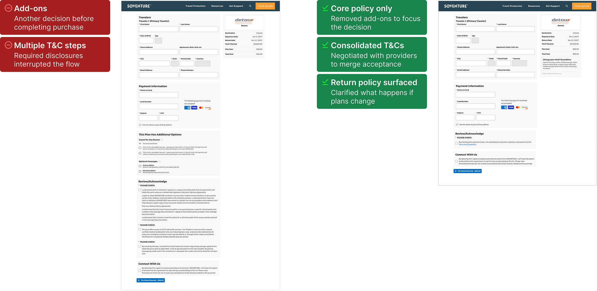

Soventure / Case study
A policy for the trip
you’re actually taking.
- Role
- Senior UX Designer
- Period
- 2023–2026
- Product
- Consumer travel-insurance marketplace
- Reach
- Travelers comparing and purchasing coverage
- Team
- Graphic Designer · Insurance Specialist · Front-End Developer
Learning to design for consumer behavior
Fewer steps didn't make a better journey.
Soventure's travel-insurance marketplace had a comparison problem: plans looked alike, and travelers couldn't tell which one would actually cover their trip. Over [three years], I owned [the plan comparison, quote, and purchase experience], working with [a front-end developer, an insurance specialist, and a graphic designer].
Our first big test challenged our own assumption. We expected that moving the quote form onto the homepage would shorten the journey. It didn't. Travelers who reached a dedicated quote page finished [more often / with fewer drop-offs], so we kept the extra step and put the effort into what happened after it.


Painpoint
Travel plans are specific. Insurance summaries can be frustratingly general. Travelers needed to understand which cancellation reasons and activities a policy covered before they could judge whether it suited their trip.
Email exchange about backcountry and heli-skiing coverage.What research revealed
Medical coverage and trip cancellation mattered, but simply displaying a cancellation benefit wasn’t enough. Travelers wanted to understand which reasons for cancellation were actually covered. Activity coverage was another key consideration. Benefits such as baggage delay carried less weight in the decision.

Making plans easier to compare
Comparing Squaremouth and TravelInsurance.com with Soventure highlighted how much the structure of a results card matters. Dense lists require travelers to read each plan line by line; a consistent, labeled grid lets them find the same benefit in the same place across plans.
Soventure’s cards give coverage limits fixed positions and keep the plan name and total price visually distinct. Category tags explain what makes a plan different, while ratings and review counts provide trust signals. Benefit-based filters help travelers narrow the results before comparing the details.

Reducing friction at the point of purchase
The opportunity wasn’t another feature. It was removing decisions, consolidating requirements, and answering last-minute questions before purchase.

What changed
Soventure converted at a 20% higher rate than InsureMyTrip. Based on that result, most of Soventure's design — including the quote results page, plan row layout, and shortened purchase flow — was adopted into the parent site.
Product journey
From trip details
to protected travel.
Follow the purchase journey from understanding the offer through entering trip details, comparing plans, and completing checkout.
What I learned
How I learned to design
for consumer behavior.
I also learned to accept tradeoffs. Insurance providers had requirements we needed to accommodate, and retrieving their quote data took time. I had to balance those needs with an experience that felt responsive to travelers. That meant weighing what we asked people to do, how much information we presented, and how the wait for results felt. A decision could satisfy a provider and still make the site feel sluggish; both sides needed attention.